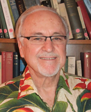

C. Anthony Anderson
Professor of Philosophy
PhD, University of California, Los Angeles
Areas of Study
- Logic
- Metaphysics
- Epistemology
Info
Department of Philosophy
5631 South Hall #5708
Santa Barbara, CA 93106- Phone: 805-893-7530
- Fax: 805-893-8221
- http://www.philosophy.ucsb.edu/websites/anderson/
- Curriculum Vitae
- Office Hours
Research Abstract
Most of my work has been in the field of philosophical logic, especially intensional logic, and on related topics in the philosophy of language. My main project has been the search for a theory of attributes, propositions, and concepts. In effect, I am trying to formalize Plato’s Theory of Forms so as to meet present day standards of rigor. At bottom I am intensely interested in the traditional, the really traditional, problems of philosophy: What are the fundamental categories of reality? What is the nature of abstract entities and our knowledge thereof (if any)? Does God exist? Are there such things as ethical facts? Hence my excursions into philosophy of religion, epistemology, and the theory of value, and my commitment to using the best available logical tools to attack the problems.
Selected Bibliography
Edited Volumes
Logic, Meaning and Computation: Essays in Memory of Alonzo Church, eds. C. Anthony Anderson and Michael Zeleny, Dordrecht (Boston, London: Kluwer Acadmic Publishers, 2001).
Paul Meehl: Selected Philosophical and Methodological Papers, eds. C. Anthony Anderson and Keith Gunderson (Minneapolis: University of Minnesota Press, 1991).
Propositional Attitudes. The Role of Content in Logic, Language, and Mind, eds. C. Anthony Anderson and Joseph Owens (Stanford: CSLI Publications, 1990).
Rereading Russell: Essays on Bertrand Russell’s Metaphysics and Epistemology. Minnesota Studies in the Philosophy of Science, Volume XII, eds. C. Wade Savage and C. Anthony Anderson (Minneapolis: University of Minnesota Press, 1989).
Articles
“Chisholm and the Logic of Intrinsic Value”, in The Philosophy of Roderick M. Chisholm, ed. Lewis Hahn. La Salle, Illinois, Open Court, 1997.
“Toward a Logic of A Priori Knowledge”, Philosophical Topics, 1995.
“Analyzing Analysis”, Philosophical Studies, 72, 1993, pp. 199-222.
“Some Emendations of Godel’s Ontological Proof”, Faith and Philosophy, 7, 1990, pp. 291-303.
“Russell on Order in Time”, in Rereading Russell: Essays on Bertrand Russell’s Metaphysics and Epistemology: Minnesota Studies in the Philosophy of Science, eds. C. Wade Savage & C. Anthony Anderson (Minneapolis: University of Minnesota Press, 1989), pp. 249-63.
“Semantical Antinomies in the Logic of Sense and Denotation”, Notre Dame Journal of Formal Logic, 28, 1987, pp. 99-114.
“General Intensional Logic”, in Handbook of Philosophical Logic, Vol II: Extensions of Classical Logic, eds. F. Guenthner & Dov Gabbay (Dordrecht, Holland: D. Reidel & Co., 1984), pp. 355-85.